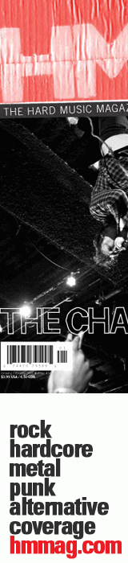

CMnexus
:
Contemporary Christian culture, music, and media.
Browse Magazines
Browse Profiles
cmnexus.org
CM
nexus
→
Profiles
→
D
Deas Vail
Media coverage:
Apr 2007 in
CCM
"Insider: Deas Vail's Brave New World", by
John J. Thompson
May 2007 in
HM
"Deas Vail", by
Sam Farries
Jan 2010 in
HM
"Deas Vail", by
Matt Conner
May 2010 in
Relevant
"The Drop: Deas Vail", by
Alyce Gilligan
Oct 2011 in
HM
"Deas Vail", by
Alexandra Leonardo
Jan 2012 in
CCM Digital
"The Fringe: Deas Vail", by
Matt Conner
Albums & reviews:
2006
:
Collapse
Sep 2006 in
HM
, by
Kelly Benson
2007
:
All the Houses Look the Same
May 2007 in
HM
, by
Tony Shore
May 2007 in
YouthWorker
May 2007 in
CCM
, by
Matt Conner
2008
:
White Lights EP
Nov 2008 in
HM
, by
Matt Conner
2010
:
Birds & Cages
Jan 2010 in
HM
, by
Tony Shore
25 Jan 2011 in
Christian Century
, by
Lou Carlozo
2011
:
Split EP
with
Farewell Flight
Jul 2011 in
HM
, by
Matt Conner
2011
:
Deas Vail
Oct 2011 in
HM
, by
Matt Conner
Dec 2011 in
CCM Digital
, by
Andrew Greer
CMnexus
(noun)
The magazine index
of modern music
and Christianity
Advertisement

© 2011 CMnexus. Last updated September 2019.
Contact:
Rants and other correspondence to:
editor -AT- cmnexus
-DØT- org
About